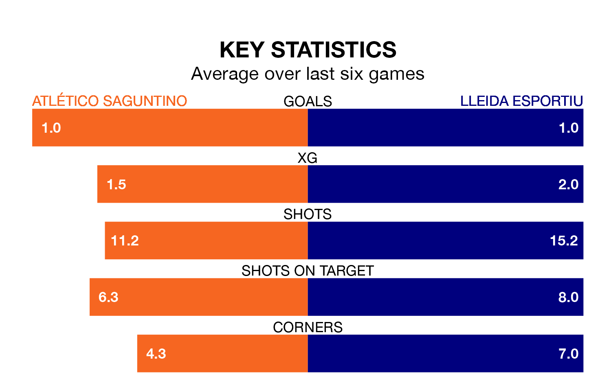

Lleida Esportiu travel to Atlético Saguntino on early Sunday in Segunda División RFEF Group 3.
The visitors come into the game on the back of a win in their last match, having beaten UD Alzira 3-1 at home.
Atlético Saguntino, meanwhile, lost their last match, 2-1 against CF Badalona.
Lleida Esportiu are second in the table after 20 games, of which they have won 12 and drawn three, earning 39 points.
Atlético Saguntino are 12 places behind the visitors in 14th, with six wins and five draws putting them on 23 points.
With 29 goals in 20 games so far this season, Lleida Esportiu are scoring more than average in the league with 1.4 goals per game. And they are conceding fewer than average, letting in 16 goals at a rate of 0.8 per game.
The home side, meanwhile, are below average scorers, with 1.0 goal per game, compared to a league average of 1.2. They have conceded 1.4 goals per game.
In the last 10 years, Atlético Saguntino and Lleida Esportiu have played each other on seven occasions. Atlético Saguntino won four of them, Lleida Esportiu two, and they drew once.
On average, Atlético Saguntino scored 1.3 goals and Lleida Esportiu 0.6 in those matches.
Their last meeting was on September 24, when Lleida Esportiu won 1-0 at home.
Atlético Saguntino are in mixed form in Segunda División RFEF Group 3, with two wins and a draw from their last six games.
And also with two wins and a draw over that period, Lleida Esportiu's form is identical – they have both taken seven points from 18.
Updated: 15:45 (UTC), 02/02/24